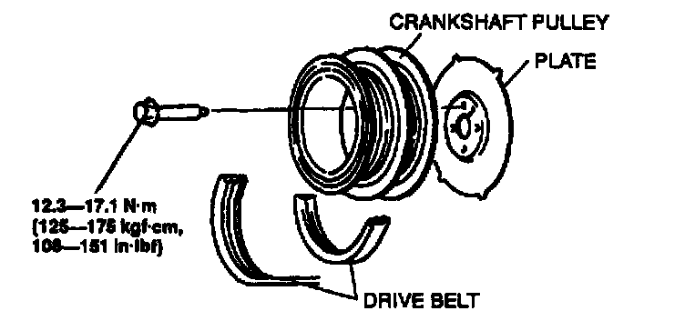

Operation CHARM
: Car repair manuals for everyone.
Home
>>
Mazda
>>
1999
>>
MX-5 Miata L4-1.8L DOHC
>>
Repair and Diagnosis
>>
Powertrain Management
>>
Ignition System
>>
Sensors and Switches - Ignition System
>>
Crankshaft Position Sensor
>>
Service and Repair
>>
Crankshaft Projection Plate
Crankshaft Projection Plate
1.
Remove the drive belt.

2.
Remove the crankshaft pulley.
3.
Remove the plate.
4.
Install in the reverse order of removal.
NOTE:
-
Adjust the drive belt when installing the drive belt.